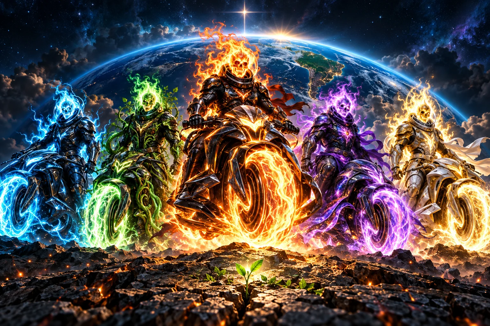
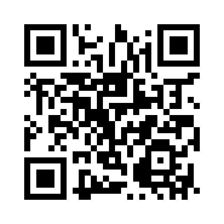
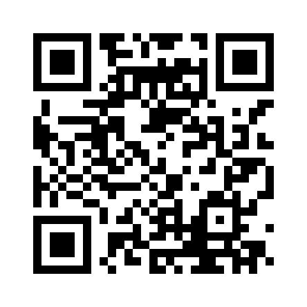
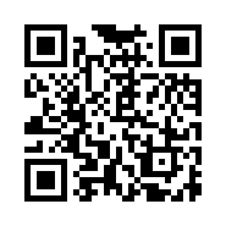
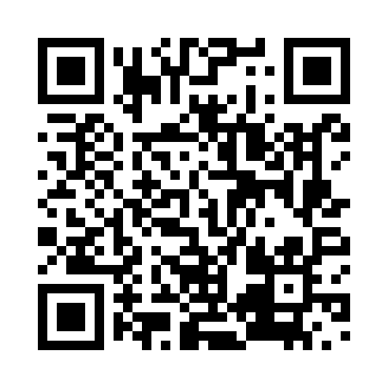
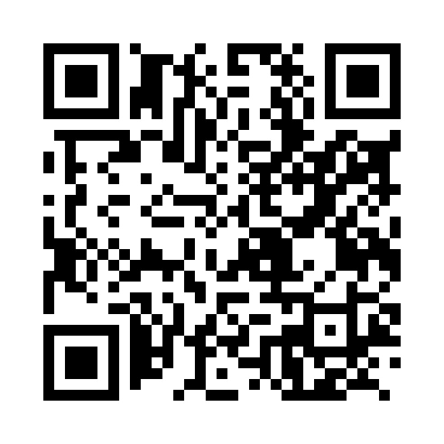
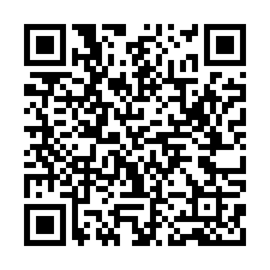

CIANO · COLABORAÇÃO
Nexo
Une diferentes formas de pensar e talentos para reconstruir a comunidade. Ninguém precisa enfrentar tudo sozinho.
FÉ NO CAMINHO · CORAGEM PARA CUIDAR
Rebele-se contra a indiferença. Busque o que importa: fé, liberdade, natureza e gente de verdade. De Sobral para o mundo, transforme sua coragem em cuidado e sua esperança em atitude.
Mesmo no escuro, a gente escolhe
cuidar da vida e manter a esperança.

UNIVERSO PLANO D · FICÇÃO E PROPÓSITO
Nesta saga de ficção, cinco cavaleiros do apocalipse chegam à Terra para enfrentar a cobiça e a indiferença. Sua rebeldia é reconstruir: fé em Deus, dignidade humana, inclusão e cuidado com o planeta.
CIANO · COLABORAÇÃO
Une diferentes formas de pensar e talentos para reconstruir a comunidade. Ninguém precisa enfrentar tudo sozinho.
VERDE · NATUREZA
Protege a Terra, os animais e as florestas. Sua força se renova quando uma vida encontra espaço para florescer.
FOGO · SOLIDARIEDADE
Transforma a indignação com a cobiça em ajuda voluntária, direta e transparente. Compartilhar também é uma forma de coragem.
VIOLETA · NEURODIVERSIDADE
Defende autonomia, acessibilidade e espaço para mentes neurodivergentes criarem, liderarem e participarem com dignidade.
DOURADO · FÉ EM DEUS
Mantém viva a fé em Deus e a esperança. Sua luz acolhe, respeita a liberdade de consciência e inspira o cuidado com o próximo.
01 / A PROPOSTA
O PLANO D nasceu para organizar, fortalecer e impulsionar o desenvolvimento coletivo da população sobralense, com visão de longo prazo.
Este espaço aproxima essa intenção de uma prática cotidiana: refletir antes de agir, ouvir quem precisa e transformar boas ideias em atitudes responsáveis.
A biblioteca abaixo é uma contribuição educativa para essa caminhada. As iniciativas cívicas acolhem pessoas de qualquer crença ou sem religião.
02 / BIBLIOTECA DE REFLEXÃO
Para os desafios da vida real, uma pausa que ajuda a escolher com cuidado.
24 leituras · 6 temas · sem sequência obrigatória
Acervo autoral de inspiração católica. Leia o resumo aqui e aprofunde no site de origem, no seu ritmo.
Experimente outra palavra ou escolha outro tema.
Tente recarregar a página ou visite o acervo de origem.
Abrir o acervo completo ↗♡ Seus favoritos ficam apenas neste navegador.
03 / DO PENSAMENTO À ATITUDE
Você pode começar pelo que cabe no seu dia. Sem pressa, sem exposição, com respeito à sua realidade.
Escolha uma leitura que converse com o momento. Observe o contexto e preserve sua liberdade de interpretar.
Explorar a biblioteca ↗Escute uma necessidade real. Ofereça uma ajuda possível, respeitando limites, autonomia e dignidade.
Conhecer iniciativas sociais ↗Organize uma proposta de reflexão. A oficina do acervo prepara um rascunho local para você revisar e guardar.
Abrir a oficina de ideias ↗04 / ENERGIA QUE VIRA CUIDADO
Escolha uma causa, conheça quem atua e contribua diretamente pelos canais oficiais.
Fontes consultadas em 20/10/2026 · Atualização manual
O PLANO D organiza um diretório de canais oficiais. Não recebe nem intermedeia valores. A presença de uma instituição aqui não representa parceria, campanha conjunta ou certificação de seus resultados.
Os QRs abaixo abrem sites oficiais, não iniciam pagamentos. Antes de confirmar um PIX, confira a chave no canal oficial e o beneficiário no aplicativo do banco.
CONSERVAÇÃO · BIOMA CAATINGA
Apoie a conservação da Caatinga, a educação ambiental e as iniciativas de proteção desse patrimônio natural brasileiro.
Associação Caatinga
CNPJ institucional: 02.885.544/0001-03. A página oficial publica expressamente esse CNPJ como chave Pix.
A página de doação não apresenta data de atualização. Não houve validação bancária nem análise independente dos balanços vinculados.
Consulta: . Fontes públicas conferidas; sem validação bancária nem auditoria independente dos resultados.
VIDA MARINHA · LITORAL BRASILEIRO
Conheça o trabalho de conservação das tartarugas marinhas e as formas oficiais de apoiar o Projeto Tamar.
Chave Pix de doação não confirmada nos canais oficiais consultados. O Projeto Tamar orienta apoio por visitas aos centros, compras nas lojas oficiais e divulgação. Consulte as formas de apoio diretamente com a instituição.
Fundação Centro Brasileiro de Proteção e Pesquisa das Tartarugas Marinhas — Pró-Tamar
CNPJ institucional: 16.110.041/0001-70. O CNPJ identifica a fundação e não é apresentado como chave Pix.
A fundação é distinta do Centro TAMAR/ICMBio. O balanço de 2025, publicado em 16/06/2026, foi consultado para identificar nome e CNPJ; isso não constitui auditoria dos resultados. Não foi presumido que o CNPJ seja Pix.
Consulta: . Fontes públicas conferidas; sem validação bancária nem auditoria independente dos resultados.
FLORESTAS E ÁGUA · MATA ATLÂNTICA
Contribua com a conservação da Mata Atlântica, a restauração de florestas e a proteção da água pelos canais oficiais da organização.
CHAVE PIX · CNPJ
57354540000190Beneficiário informado: Fundação SOS Pró-Mata Atlântica.
Fundação SOS Pró-Mata Atlântica
CNPJ institucional: 57.354.540/0001-90. A página oficial publica expressamente esse CNPJ como chave Pix.
A página de doação não apresenta data de atualização. Alguns relatórios podem solicitar cadastro para download; nenhum cadastro foi realizado. Documentos não foram auditados e a chave não foi validada na rede bancária.
Consulta: . Fontes públicas conferidas; sem validação bancária nem auditoria independente dos resultados.
INCLUSÃO E CUIDADO · FORTALEZA
Conheça o trabalho da APAE Fortaleza e contribua para o cuidado e a inclusão de pessoas com deficiência intelectual e múltipla.
CHAVE PIX · CNPJ
07143845000185Beneficiário informado: Associação de Pais e Amigos dos Excepcionais — APAE de Fortaleza.
Associação de Pais e Amigos dos Excepcionais — APAE de Fortaleza
CNPJ institucional: 07.143.845/0001-85. A página oficial de doação também publica expressamente esse CNPJ como chave Pix.
A página de doação não apresenta data de atualização. Documentos contábeis vinculados não foram analisados; não houve validação bancária.
Consulta: . Fontes públicas conferidas; sem validação bancária nem auditoria independente dos relatórios.
NATUREZA E EDUCAÇÃO · CEARÁ
Apoie iniciativas socioambientais no Ceará. Conheça os projetos, a educação ambiental e os documentos divulgados pela instituição.
Pix disponível no canal Asaas vinculado pelo site institucional. Na consulta, esse canal exibe doação única de R$ 30. Não há chave fixa atual confirmada para reproduzir aqui.
PIX no canal oficial · R$ 30Instituto Verdeluz · Fortaleza, Ceará
CNPJ institucional: 24.874.888/0001-50. O CNPJ identifica a instituição; não é apresentado aqui como chave Pix.
O portal lista estatuto, atas, atividades e balanço financeiro. Os documentos vinculados não foram analisados. A campanha encerrada de 2020 não foi usada para confirmar chave Pix atual.
Consulta: . Fontes públicas conferidas; sem validação bancária nem auditoria independente dos relatórios.
INFÂNCIA E ADOLESCÊNCIA
Apoie a proteção dos direitos de crianças e adolescentes no Brasil e no mundo.

CHAVE PIX DIVULGADA PELA INSTITUIÇÃO
pix@unicef.orgBeneficiário informado: Fundo das Nações Unidas para a Infância.
Fundo das Nações Unidas para a Infância
CNPJ institucional: 03.744.126/0001-69. O CNPJ não é apresentado como chave Pix.
Consulta: . A conferência foi feita em fontes públicas; não houve validação bancária nem auditoria independente dos relatórios.
AJUDA MÉDICA HUMANITÁRIA
Contribua com assistência médica humanitária a pessoas afetadas por conflitos, epidemias e outras emergências.

Na doação única, selecione Pix no canal oficial. O código é emitido após cadastro; não há chave fixa reproduzida aqui.
Consultar orientação de PIXMédicos Sem Fronteiras Brasil
CNPJ institucional: 13.844.894/0001-48. O CNPJ não é apresentado como chave Pix.
Consulta: . A conferência foi feita em fontes públicas; não houve validação bancária nem auditoria independente dos relatórios.
SOLIDARIEDADE E DIREITOS
Conheça as ações de solidariedade e defesa de direitos e contribua pelo canal nacional da instituição.

Cáritas Brasileira
CNPJ institucional: 33.654.419/0001-16. O CNPJ não é apresentado como chave Pix.
Consulta: . A conferência foi feita em fontes públicas; não houve validação bancária nem auditoria independente dos relatórios.
CUIDADO NA PRIMEIRA INFÂNCIA
Conheça o trabalho de acompanhamento de gestantes, crianças e famílias e as formas oficiais de contribuir.

A página oficial oferece Pix no formulário de doação. Obtenha o código diretamente lá; não reproduzimos chave histórica.
Consultar orientação de PIXPastoral da Criança
CNPJ institucional: 00.975.471/0001-15. O CNPJ não é apresentado como chave Pix.
Consulta: . A conferência foi feita em fontes públicas; não houve validação bancária nem auditoria independente dos relatórios.
COMBATE À POBREZA
Conheça os programas de desenvolvimento social e combate à pobreza nas favelas e os canais de contribuição.

Chave Pix não confirmada nesta consulta. Confira as formas de contribuição disponíveis no site oficial.
Instituto Gerando Falcões
CNPJ institucional: 18.463.148/0001-28. O CNPJ não é apresentado como chave Pix.
Consulta: . A conferência foi feita em fontes públicas; não houve validação bancária nem auditoria independente dos relatórios.
A contribuição pelo canal geral segue as regras da instituição e não implica destinação exclusiva a Sobral. Consultar o registro de fontes e atualização ↗

CLAREZA TAMBÉM É CUIDADO
Autoria, fontes e limites visíveis.
Nexo, Raiz, Brasa, Prisma e Lúmen são personagens de uma narrativa ficcional criada para expressar os valores do projeto. Não são personagens bíblicos nem uma interpretação literal do Apocalipse. A arte foi gerada com assistência de inteligência artificial. A neurodiversidade aparece como compromisso de inclusão, autonomia e participação.
Direitos e créditos da arte ↗As referências usam a Almeida de 1911, na transcrição do Project Gutenberg, eBook 62383. Os resumos são aplicações autorais. O samurai é uma metáfora contemporânea de disciplina e domínio próprio. Consulte o contexto completo na leitura de origem.
Consultar a edição bíblica ↗Idealização e manutenção do acervo: Aldenir Rocha de Oliveira Filho. A origem informa preparação dos textos e da arte com assistência de inteligência artificial. A revisão teológica independente permanece pendente.
Este catálogo reúne a edição 0.3.0, de 16/09/2026. As páginas externas podem receber atualizações; o catálogo não tem sincronização automática. Os direitos do conteúdo de origem foram preservados.
Consultar procedência e hashes ↗O site não possui conta, formulário de envio ou análise de audiência. A busca acontece nesta página e os favoritos ficam no armazenamento deste navegador. Os botões de copiar usam a área de transferência somente quando acionados. O botão do WhatsApp abre uma mensagem para você revisar e enviar. As doações são feitas nos sites externos das instituições. Links externos abrem outros sites, sujeitos às políticas de seus responsáveis. A ajuda e a participação cívica não dependem de adesão religiosa.